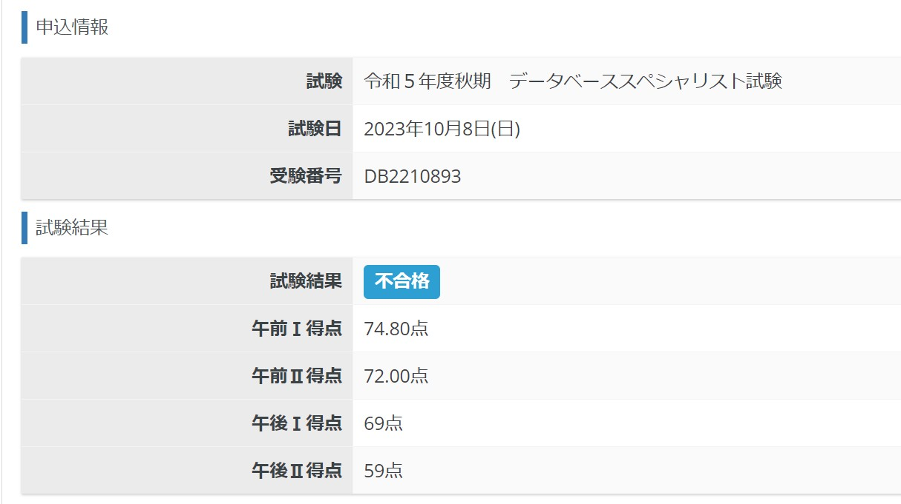

<h1>できること</h1>

<h2>Ruby on Rails</h2>

<div>
  かつて<a href="https://shop-pro.jp/">カラーミーショップ</a>のバックエンドのAPIを開発していました。一人でRailsアプリケーションを作って運用することができます。
</div>

<div>また、チャットの評判を集計するRailsアプリケーションを作成したことがあります。</div>

<a href="https://github.com/ryuchan00/typetalk-like">ryuchan00/typetalk-like</a>

<h2>Ruby</h2>

<div>
  上述したカラーミーショップのRubyのAPIライブラリのGemを作って公開したことがあります。
</div>

<a href="https://github.com/ryuchan00/colorme_public_api">ryuchan00/colorme_public_api</a>

<h2>PHP</h2>

<div>
  主にフレームワークを用いないPHPのアプリケーションの開発をしていました。RDBMSと連携することはできます。
</div>

<h2>C++</h2>

<div>
  ビッグデータの処理の研究をしています。そこで、C++を用いてスケッチのアルゴリズムを実装しています。オブジェクト指向プログラミングやポインターなどのC++の基本的な機能を使うことができます。
</div>

<a href="https://github.com/ryuchan00/Minlist">卒業研究で用いたCountMin Sketchのソースコード</a>

</br>

<a href="https://github.com/ryuchan00/Sliding-Sketch">修士での研究で用いているSliding-Sketchのソースコード</a>


<h2>Docker</h2>

<div>
  コンテナ技術を持ちいた簡単な開発環境の構築を行うことができます。
</div>

<h1>直近でやっていること</h1>

<h2>競技プログラミング</h2>

<div>
  AtCoderのアルゴリズムコンテストに参加しています。最近は動的計画表を用いたアルゴリズムを勉強しています。
</div>

<a href="https://atcoder.jp/users/votoms/history?contestType=algo">votomsさんのコンテスト成績表 - AtCoder</a>

<h2>データベーススペシャリスト</h2>

<div>
  データベーススペシャリストを2023年10月に受けました。残念ながら午後2が59点で1点足らずに不合格でした。
</div>

<figure>
  
  <figcaption>受験結果、午後2以外は合格点を満たしている</figcaption>
</figure>
